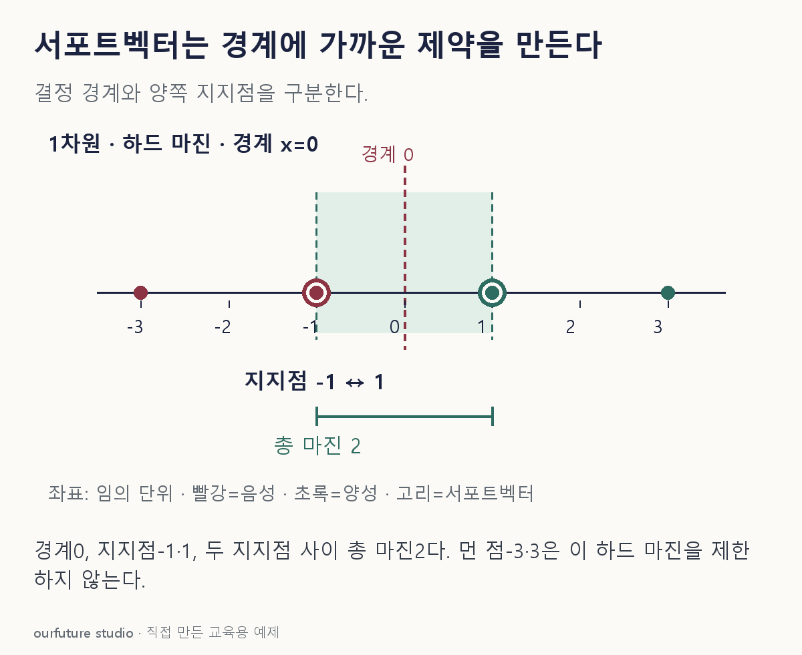

조건을 바꾸며 확인하기
분리 가능한1차원 하드 마진 예제다. 재척도화한 정규화식으로 계산하며 일반 고차원 학습·소프트 마진을 적합하지 않는다.
설명 그림과 비교하기
아래 그림과 표는 고정된 설명 예제입니다. 기본·변형 중 어떤 조건인지 캡션을 읽고, 바꾼 입력의 결과는 계산 칸에서 확인하세요.

같은 문제를 직접 골라 보기
1차원 하드 마진. 음성은 −3·−1, 양성은 1·3. 경계 x=0.
조건을 더 바꾸면?
모든 좌표를 2배 하면 지지점과 지지선 사이 총 폭은?
변형 풀이 확인
지지점 −2·2, 총 폭 4.
새 정규화 표현은 w=0.5,b=0이다. 2/|0.5|=4이며 단위 변경에 따라 기하 거리가 변한다.
하드 마진은 가장 가까운 양쪽 점을 본다.